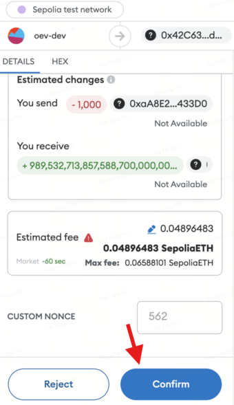

Earn
Rangebound
Step 1: Selecting Your Product
→ Navigate to the Protocol tab and click on Earn. → Choose the Rangebound structured product.
→ Select the underlying asset you prefer—BTC or ETH.
→ Select one of the Top Pick Trades listed for your chosen asset.

Step 2: Reviewing Trade Details
→ A popup will display all relevant trade information, including Settlement Date, Lower and Upper Barriers, Base Yield, Base+ RCH, Potential Yield, and the potential outcomes under various scenarios.
→ Enter your desired amount in USDT in the Deposit Amount box → click Deposit → your wallet will pop up a confirmation window.

If you wish to customize any details, proceed to Step 3.
Step 3: Customizing Your Trade
→ Click on the Customize icon either from the Earn homepage or from the product details page mentioned in Step 2
→ On the Customize page, you can modify your trade settings. Select your desired parameters:
Base Yield Expiry Date (i.e., Settlement Date) Lower Barrier Price (B1) and Upper Barrier Price (B2) Deposit Amount
and click Request For Quote.
→ After setting the parameters, click Deposit to proceed.

Step 4: Confirming Your Trade
When prompted, engage with the following windows for trade confirmation:
- Signature Request: A signature request window will appear first. Click Sign to authorize.
- Trade Execution: After signing, a confirmation window will appear. Click Confirm to finalize the trade.
✅Ensure both actions are completed to successfully carry out your trade.


Step 5: Trade Execution
→ Congratulations! Your transaction has been successfully submitted on-chain. ✅

Step 6: Monitoring Your Position
→ Access the Position tab to view your trade details post trade-execution.


Step 7: Claiming Your Payouts
→ On settlement (expiry) date, go to the Position tab, open your trade ticket, and click Claim to receive your payouts.
Note:
For Earn products (secured), all invested amounts will be staked in the Aave protocol to generate passive returns. Moreover, a portion of the Aave returns will be retained as Base Yield, and the remaining part will be deployed to option strategies to generate potential Upside returns.
Bull Trend
Step 1: Selecting Your Product
→ Navigate to the Protocol tab and click on Earn.
→ Choose the Bull Trend structured product.
→ Select the underlying asset you prefer—BTC or ETH.
→ Select one of the Top Pick Trades listed for your chosen asset.

Step 2: Reviewing Trade Details
→ A popup will display all relevant trade information, including Settlement Date, Lower and Upper Strikes, Base Yield, Base+ RCH, Potential Yield, and the potential outcomes under various scenarios.
→ Enter your desired amount in USDT in the Deposit Amount box → click Deposit → your wallet will pop up a confirmation window.
If you wish to customize any details, proceed to Step 3.

Step 3: Customizing Your Trade
→ Click on the Customize icon either from the Earn homepage or from the product details page mentioned in Step 2
→ On the Customize page, you can modify your trade settings. Select your desired parameters: Base Yield Expire Date (i.e., Settlement Date) Lower Strike Price (K1) and Upper Strike Price (K2) Deposit Amount
and click Request For Quote.
→ After setting the parameters, click Deposit to proceed

Step 4: Confirming Your Trade
When prompted, engage with the following windows for trade confirmation:
- Signature Request: A signature request window will appear first. Click Sign to authorize.
- Trade Execution: After signing, a confirmation window will appear. Click Confirm to finalize the trade.
✅Ensure both actions are completed to successfully carry out your trade.


Step 5: Trade Execution
→ Congratulations! Your transaction has been successfully submitted on-chain. ✅

Step 6: Monitoring Your Position
→ Access the Position tab to view your trade details post trade-execution.


Step 7: Claiming Your Payouts
→ On settlement (expiry) date, go to the Position tab, open your trade ticket, and click Claim to receive your payouts.
Note:
For Earn products (secured), all invested amounts will be staked in the Aave protocol to generate passive returns. Moreover, a portion of the Aave returns will be retained as Base Yield, and the remaining part will be deployed to option strategies to generate potential Upside returns.
Bear Trend
Follows the same steps as outlined for the Bull Trend product